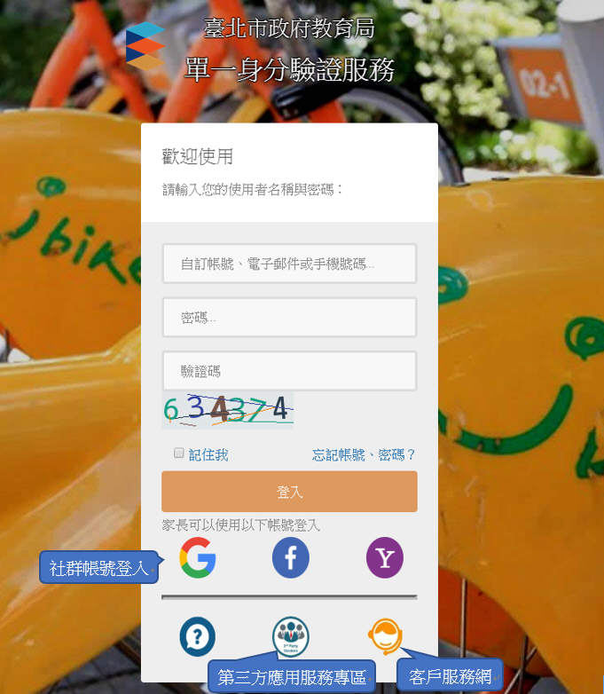
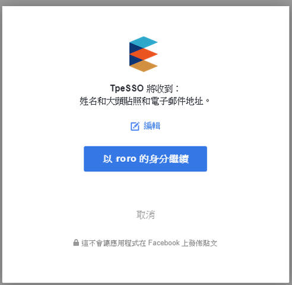
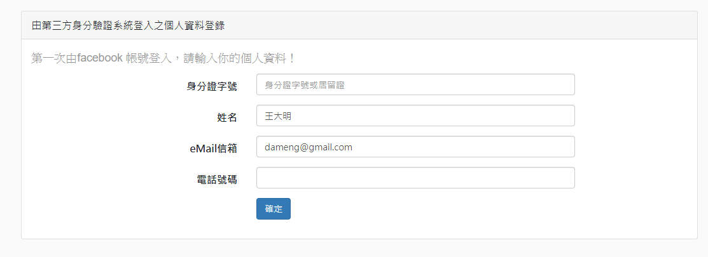

臺北市教育局單一簽入帳號
臺北市教育局單一簽入服務為臺北市教育局提供之雲平台，單一簽入帳號可提供單一簽入服務，可讓授權的網路使用者在開始存取網路時，透過單一驗證的方式，方便快速地存取所有已授權的網路資源。
誰可以申請臺北市教育局單一簽入帳號? 如何申請?
1. 臺北市教師: 經由任教之臺北市學校(高中、國中、國小)校務行政系統資料提供預設帳號。
2. 臺北市學生: 經由就讀之臺北市學校(高中、國中、國小)校務行政系統資料提供預設帳號。
3. 臺北市家長: 可由學校導師提供親子連結QRCode進行親子關係確認，或是利用社群帳號登入後，家長自行進行親子連結關係的驗證，以提供相關服務。
學生轉學或畢業要如何處理?
學生可於登入系統後，設定自訂帳號，則於轉學或畢業後，還是可以由自訂帳號登入。
如未設定自訂帳號，則於轉學或升學後，則會再配發一組新學校的預設帳號提供使用。
如何使用本單一簽入服務
請利用配發帳號進行登入，在輸入帳號密碼及圖形驗證碼後，認證成功後則可使用相關服務。

1. 首先，如您是教師或學生，則應擁有本服務的配發帳號，於帳號及密碼欄位輸入您的帳號及密碼再加上圖形驗證碼，輸入完成後點選確定。
2. 當您的身分是教師於首次登入本服務，會要求您將預設帳號變更為自訂的帳號
3. 當第一次登入本服務，則會要求您將預密碼進行變更，新密碼變更需符合強式密碼規則:
4. 如果您是家長，本服務網提供第三方社群網站的帳號認證機制進行註冊：

